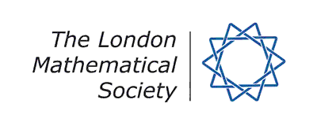
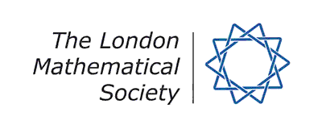

ScotCats 10: A HoTT-Date With Thorsten Altenkirch
Wednesday 4 March 2015. Department of Computer and Information Sciences.
Dr Thorsten Altenkirch is visiting the MSP group during the week of March 2, and we thought we would have an afternoon of talks in his honour on Wednesday 4 March. Please feel free to attend and forward this to anyone else who might be interested. If you would like to give a talk, we could create a few spots too. Please get in touch ASAP if you wish to i) attend; ii) give a talk; and/or iii) stay for dinner. This will help us to cater appropriately.
This meeting is part of the Scottish Category Theory Seminar series.
Confirmed speakers
- Thorsten Altenkirch: Higher Inductive Types
- Bob Atkey: A Cubical Set Model for Relationally Parametric Type Theory
- Neil Ghani: Higher Dimensional Parametricity via Cubical Categories
- James McKinna: Using relations to streamline the encode-decode method?
- Fredrik Nordvall Forsberg: Presentations of mutually defined types (including HITs)
Preliminary programme
| Time | Talk |
|---|---|
| 14:00 – 15:00 | Higher inductive types (whiteboards) Thorsten Altenkirch (Nottingham) |
| 15:00 – 15:30 | Presentations of mutually defined types (including HITs) (whiteboards) Fredrik Nordvall Forsberg (Strathclyde) |
| 15:30 – 16:00 | coffee |
| 16:00 – 16:30 | Using relations to streamline the encode-decode method? James McKinna (Edinburgh) |
| 16:30 – 17:00 | Higher Dimensional Parametricity via Cubical Categories (whiteboards) Neil Ghani (Strathclyde) |
| 17:00 – 17:30 | A Cubical Set Model for Relationally Parametric Type Theory (whiteboards) Bob Atkey (Edinburgh) |
Venue
The workshop will take place in room LT1415, on the 14th floor of Livingstone Tower, which is part of the University of Strathclyde. Livingstone Tower is in central Glasgow, near to both Glasgow Queen Street station and Glasgow Central Station.
Map
The following map shows several key locations (click on the link below the map for a larger picture):
View a larger map.
Organisers
- Neil Ghani, Strathclyde. Email: Neil.Ghani [at] cis.strath.ac.uk.
- Fredrik Nordvall Forsberg, Strathclyde. Email: Fredrik.Nordvall-Forsberg [at] strath.ac.uk.
![[SICSA logo]](sicsalogo.jpg) 
This workshop is supported by
the Scottish Informatics and
Computer Science Alliance and the London Mathematical Society.

This workshop is supported by
the Scottish Informatics and
Computer Science Alliance and the London Mathematical Society.